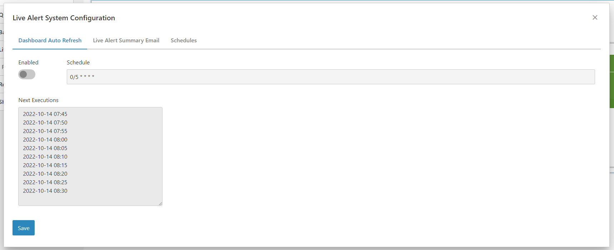
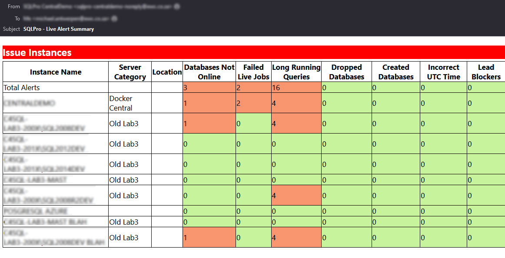
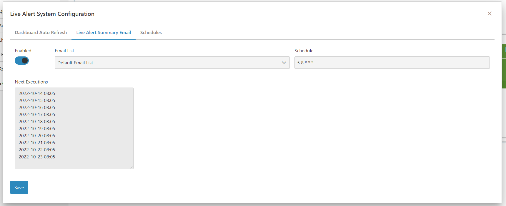
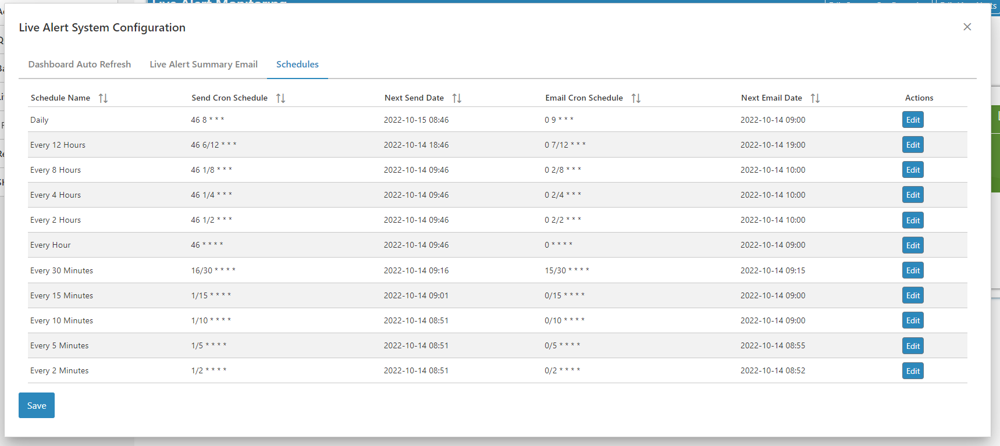
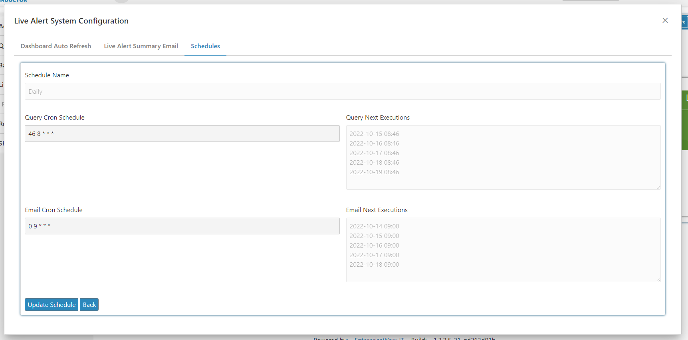

Introduction
To get to this dialog, click on the System Edit button on the Live Alert Monitoring screen.
In Live Alert system settings is split into three sections:
- Dashboard Auto Refresh
- Live Alert Summary Email
- Schedules
Dashboard Auto Refresh
If you are using the dashboard on a large screen with no attached input devices or if you have a dedicated monitor for this live alert screen then allowing the screen to refresh automatically would be beneficial.
To enable auto refreshing, simply toggle the Enable button. You can also adjust the schedule that the refresh occurs by changing the cron string for the Schedule field. Finally click on the Save button once you are done.

Live Alert Summary Email
Sending alerts on every issue can result in a fair amount of unwanted email. To combat this, you can enable a summary email which has the status of all live alerts and lists the instances that have issues and the counts of that issue. This way the intended audience will get a single email for all the issues rather than an email per issue.

To configure the live alert summary click on the Live Alert Summary Email tab.

Enable the email by toggling on the Enabled toggle. Select the Email List of recipients and adjust the schedule by changing the cron string for the Schedule field.
Note
By default the email is scheduled to arrive at 8:05 AM but this can easily be changed by adjusting the text in the cron Schedule field
Finally click on the Save button once you are done.
Schedules
The schedules for the Live Alerts module is highly configurable as each schedule is just a cron string.
Each schedule line item has two schedules:
- Send Cron Schedule - the schedule in which the live alert query is run against the instance
- Email Cron Schedule - when this schedule fires an email is sent for all live alerts with issues using this schedule
To edit the schedule click on the Edit button.

Here you can adjust the schedules by editing the cron string for both the Query Cron Schedule and the Email Cron Schedule field. Finally click on the Save button once you are done.

Warning
Even though you can change the schedule completely. It is recommended that you leave the e.g. 'daily' schedule to only fire once a day and the 'every 12 hours' schedule to only execute every 12 hours to avoid confusion.
Warning
Make sure that there is a couple of minutes between the Query Cron Schedule and the Email Cron Schedule. Since the Query Schedule needs some time to get the results from all of the installed instances.